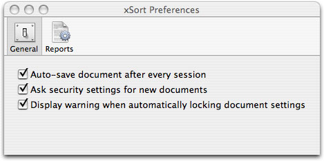
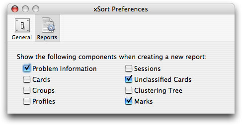

xSort Help | Contents
xSort Configuration
xSort allows the user to customize several aspects of it's execution. By choosing Preferences from the xSort menu, you have access to the configuration of those options.

The General section contains the following options:
- Auto-save documents after every session - Automatically saves the current document to disk after a participant finishes a session.
- Ask security settings for new documents - If this checkbox is active, xSort will ask you to define the document security settings when you enter exercise mode.
- Display warning when automatically locking document settings - xSort will warn you when the document settings were automatically locked. For more information, read section "Locking settings" on the "Exercise Definition" chapter.

The Reports section allows you to set what are the components of a report you want to be visible by default when creating a new report. You may change the settings for any report you created, what you define here are just the initial settings.